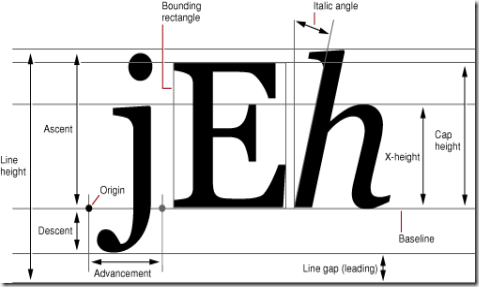
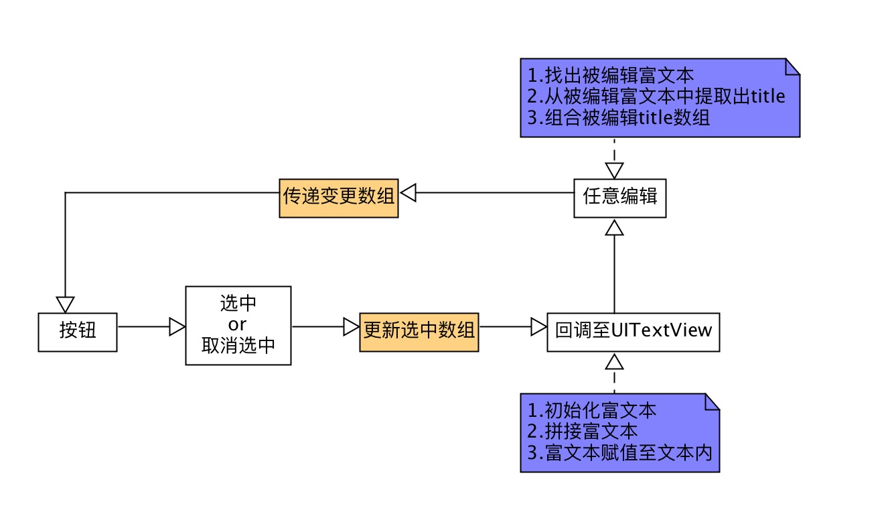

背景
n UIButton，a UITextView.
目标
- 点击UIButton，Button被选中，UITextView拼接UIButton的title。
- 取消UIButton选中，UITextView内对应UIButton的文本被删除。
- 当UITextView的文本被任意编辑时，一旦UIButton的title在文本中被破坏完整性，则取消title对应的UIButton的选中状态。
思考
A与B的互相影响问题，A的操作影响到B，B的操作影响到A，目前来说无非是利用Delegate，Block或者更时髦的RAC，但是个人更偏爱Block，理由是代理比代码块笨重，写出来的代码没有代码块统一。至于RAC，学习成本大，引入成本高。综合考虑，Block是连接AB的最佳桥梁。
UIButton点击后，通过Block传递当前选中的selectedTitleArray，所以由UIButton至UITextView的Block应该是这样的：
同样的，UITextView在编辑阶段打破已知UIButton的title的完整性时，也需要传递当前被破坏的destroyedTitleArray：
为什么会是array呢？仔细想想就会知道，UITextView在编辑阶段，是可以被多选的，当长按UITextView，可以拉长光标，选中多个字符，此时就会包含多个title，一次编辑也会破坏多个title的完整性，所以传递参数为NSAarray数据类型是必须的。
难点
建立AB之间的桥梁并不是难点，难点在与传递的参数，准确的说，难点是在UITextView的一次编辑中，找到此次编辑中被破坏的title数组。
具体来讲，编辑包含了哪几种操作？
- 单个字符的删除
- 多个字符的删除
- 在某一个位置上插入N个字符（example：中文输入法的联想词）
- 选中多个字符后粘贴，被选中的多个字符替换成新的字符。
从第一个操作说起，单个字符的删除可以用很简单的算法实现，截获到即将删除的字符以及其位置，取出该字符前maxLength - 1（maxLength：所有选中title的最大长度）长度的字符串与字符后maxLength - 1的字符串，找到匹配的title，放入到一个数组中去，删除之，并且通过Block回调取消title对应选中的UIButton，并且操作本地存储的选中按钮title数组删除掉已经取消选中的title。
多个字符的删除呢？麻烦了，多个字符的选中有这样的情况:
- 包含了一个或者多个title的完整部分.
- 包含了一个或者多个title的一小部分。
这个情况下，希望通过写算法来找，更复杂了，因为要考虑边界情况，就不赘述了。
某个位置下的插入字符与删除是同样的道理，但是选中多个字符做替换比多字删除来的更复杂了，这是多字删除+多字添加的判断。
替代方案
令人觉得复杂的根本原因是，用户具备了对一串字符串进行操作的权力，肆意的从中间操作，多字操作导致了实现的难度与收益不成正比。
如果把一串字符串作为一个整体的话，是不是就解决了这个问题呢？
是的。
把文字变成图
图就是一个完美的整体，Core graphic 可以完美的将文字转换成图，也就是将文字绘制到图上。
|
|
把图放到文字上
解决了文字一个整体的问题后，如何将这一张图放到UITextView内呢？NSTextAttachment
NSTextAttachment是服务于富文本NSAttributeString的一个新增特性-作为附件，其诞生于iOS7，NSTextAttachment中可用的属性与方法有3
- image
- bounds
|
|
看到这三个就知道了，初始化一个NSTextAttachment，赋值其image属性，并且以该附件为参数初始化一个富文本，并将该富文本拼接至UITextView的内容上，当然，由于使用了富文本，UITextView内的内容得转换成为NSAttributeString。可是现在都没用到bounds属性啊，为什么要列出来？当将这样的一个富文本拼接到文本内后，就会发现这个由图组织的富文本与后续输入的文案是不对齐的，准确点说，位置上偏上。
翻译一下是：定义文本坐标系中接收者图形表示的布局界限。 原点在文本基线上的字形位置。 默认值为CGRectZero。

Origin代表了原点，这也就是为什么看起来会偏上的原因，解决方案是 orignY-=Descent。那么如何获得Descent呢？
这样的代码段只需执行一次，获取到的Descent存储本地用作后续使用。
实现流程
解决方案的确立就好比一条船有了龙骨，接下来的事情也就水到渠成，虽然在确立了龙骨后，依旧还需要做很多事，但是相比龙骨的确立，都显得简单很多。

深蓝色框内需要一系列的私有方法支撑：
结语
利用到了一点点CoreText的上层技术，就解决了这样一个比较棘手的问题，技术需要结合具体需求才能体现其应有的价值，一味的追求技术本身是没有价值的。